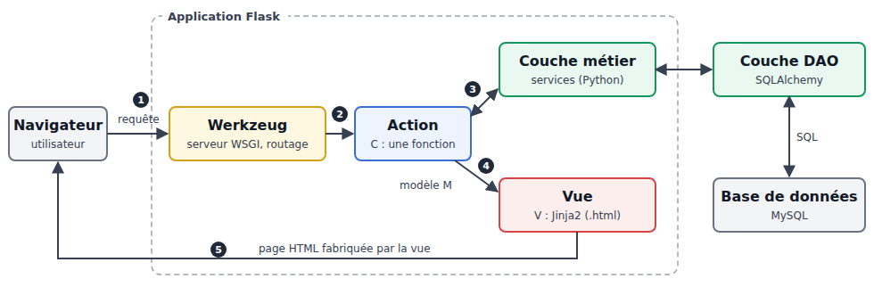
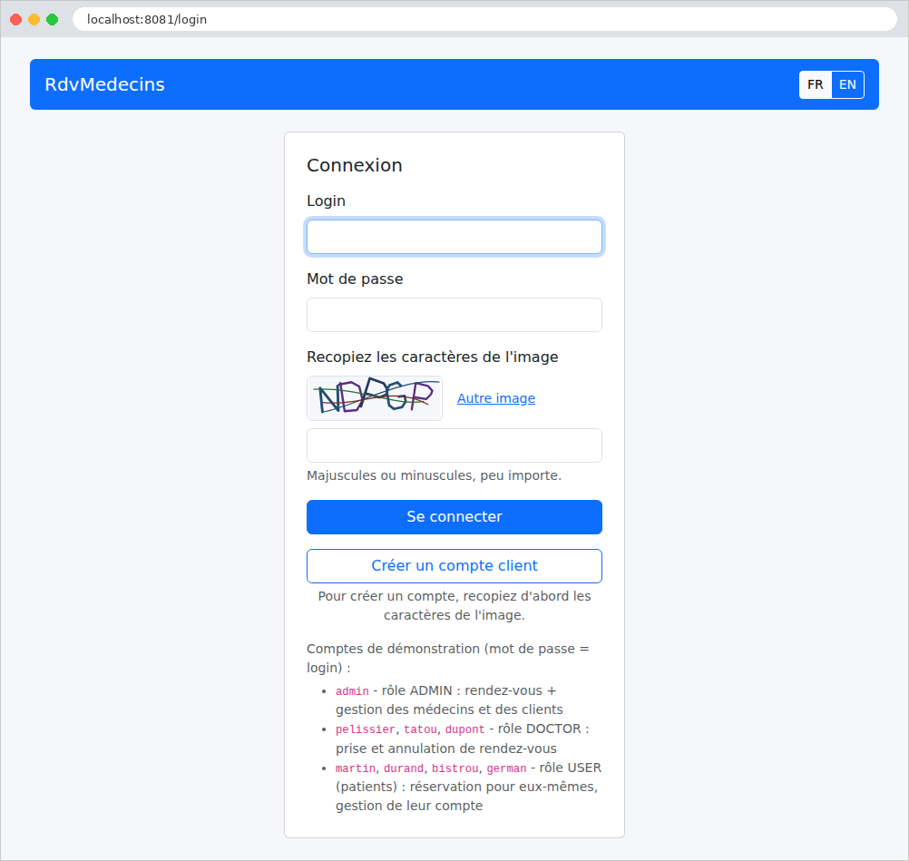

1. Introduction
The document’s PDF is |HERE|.
The document’s codes are |HERE|.
This document is a product of Anthropic’s IA Claude. It follows the document “Step-by-Step Introduction to the [Spring MVC] Web Framework” (2026), which itself followed the documents “Step-by-Step Introduction to the [ASP.NET Core MVC] Web Framework” and “Step-by-Step Introduction to the [NestJS] Web Framework” (2026). This document adapts the [Spring MVC] course to the [Python] environment:
- the [Spring MVC] framework and the [Java] language are replaced by the [Flask] 3.1 framework and the [Python] language (version 3.12 or later);
- the [Thymeleaf] views are replaced by [Jinja2] views, the view engine from [Flask];
- the [Bean Validation] validation is replaced by the [Pydantic] library (action parameters) and by the [WTForms] library (HTML forms);
- [Spring Security] is replaced by a few dozen lines of [Python] written for this purpose, which rely on the libraries [PyJWT] (the JWT tokens) and [bcrypt] (password hashing);
- ORM, [Hibernate], and [Spring Data JPA] are replaced by ORM and [SQLAlchemy], still based on [MySQL].
The document closely follows the structure of the [Spring MVC] course: first, numerous small projects, each focused on a specific concept, followed by a comprehensive case study—a web application for scheduling appointments at a medical practice—with all files fully commented. The examples have the same numbers and cover the same topics as in courses [Spring MVC] and [ASP.NET Core MVC]: a reader familiar with one of these courses can compare the frameworks example by example. However, this is not necessary: this document stands on its own and assumes no prior knowledge of [Spring] or [ASP.NET]. The only prerequisites are a basic understanding of web programming (the HTTP protocol, the HTML language) and the [Python] language (functions, classes, dictionaries, modules). A previous course by the author of this one, Introduction to the Python Language and the Flask Web Framework Through Examples (2020), introduces the [Python] language itself, for those who need to learn it first.
1.1. Flask’s Role in a Web Application
A web application is often built in layers, with each layer communicating only with its neighboring layers:

- the web layer receives HTTP requests from the browser and returns HTML pages to it. This is the layer that [Flask] helps us write;
- the business layer contains the application’s business rules (e.g., “a patient can have only one upcoming appointment”). It knows nothing about the web: it could just as easily serve a command-line application;
- the data access layer (layer [DAO], for [Data Access Object]) reads from and writes to the database. We will use [SQLAlchemy], a ORM ([Object Relational Mapper]) that maps the rows of the tables to the [Python] objects.
The web layer itself follows the [MVC] ([Model – View – Controller]) model:
- the controller (C) is a set of functions [Python], called actions, each of which processes a type of request (for example, [GET /agenda]). An action reads the request parameters, invokes the business layer, and then selects the view to display;
- the model (M) is the set of data that the action passes to the view;
- the view (V) is a [Jinja2] file (extension [.html]): a HTML page that contains [{{ ... }}] expressions and [{% ... %}] instructions ([{% if %}], [{% for %}]...), which the [Jinja2] engine replaces with data from the template.
A note on terminology, to avoid confusion: the [Flask] documentation refers to the function that processes a request as a “view function” and to the [Jinja2] file as a “template.” This document uses the terminology from the [MVC] model, as well as that from the [Spring MVC] and [ASP.NET Core MVC] courses: the function that processes a request is an action, the [Jinja2] file that generates the page is a view, and the term “template” refers to the common view from which other pages inherit (Chapter 4).
The processing of a request follows the numbered steps in the diagram:
- 1: The browser sends a request, such as HTTP or [GET /agenda?idMedecin=1&jour=2026-09-26];
- 2: The web server receives the request and passes it to the [Flask] application. During development, this server is [Werkzeug], the library on which [Flask] is built; in production, it will be a server such as [Waitress] or [Gunicorn]. [Werkzeug] compares the requested path to the application’s routes and selects the action responsible for handling this request: this is routing. Before reaching the action, the request may still pass through functions executed for all requests ([before_request]), which we will explore in subsequent chapters;
- 3: The action requests the data it needs from the business layer; if necessary, the business layer contacts the [DAO] layer, which queries the database [MySQL] via SQL;
- 4: The action constructs the view’s model M and instructs the [Jinja2] engine to generate the page (function [render_template]);
- 5: The page HTML generated by the view is the action’s response, which [Flask] returns to the browser.
[Flask] is one of the two most widely used web frameworks in the [Python] world, along with [Django]. Free and open-source, it works anywhere that [Python] works ([Windows], [Linux], [macOS]). It is a micro-framework: its core is intentionally small (routing, requests and responses, sessions, [Jinja2] views), and everything else (form validation, database access, authentication, etc.) is handled by libraries chosen by the developer. Whereas [Spring Boot] configures a coherent set of components on its own, [Flask] lets the developer assemble their own: the application is more transparent, and you can see everything that’s going on inside it. This is, in fact, what makes it a good tool for learning: almost nothing is hidden. [Flask] can create servers that return JSON to a [JavaScript] client ([Angular], [React], [Flutter]...) as it does traditional web applications, where the server generates the HTML pages and the browser simply displays them. This document examines this second use case. Two concepts—[Python]—recur on every page: decorators ([@app.get("/")], [@app.before_request]...), which associate a function with a role, and the explicit passing of the objects each function needs, whereas [Spring] injects them automatically.
1.2. Tools Used
The examples were written and tested using the following tools (their installation is described in the appendix):
- [Python] 3.13 (any version 3.12 or later is suitable). The [Python] installer also provides the [pip] tool, which downloads and installs the libraries, and the [venv] module, which creates virtual environments (we’ll discuss what these are later);
- the [Visual Studio Code] editor, along with the [Python] extension from Microsoft (which also installs the [Pylance] extension, which analyzes the code);
- a recent browser ([Chrome], [Firefox], [Edge]);
- the command-line tool [curl], which displays the raw HTTP responses (it is included with [Windows] 10 and 11);
- the SGBD [MySQL] (or [MariaDB]), for example, the one for [Laragon] under [Windows], starting from the chapter on data access, and for the case study.
Unlike [JDK], which does not contain [Spring], [Python] comes with a very comprehensive standard library; but [Flask] and the other libraries in the document are not included: [pip] downloads them from the [PyPI] repository ([Python Package Index]) during installation (so you must be connected to the Internet on that day). Each project describes its libraries in a [requirements.txt] file. The following table lists them, along with the versions used:
Library | Role | Version |
[Flask] | the web framework: routing, requests, responses, sessions, views; It includes [Werkzeug] (requests HTTP, development server), [Jinja2] (views), and [itsdangerous] (signatures) | 3.1.3 |
[asgiref] | asynchronous actions ([async def]), installed by [Flask[async]] (example 03) | 3.12.1 |
[Pydantic] | Binding and validating action parameters (Chapter 3) | 2.13.5 |
[email-validator] | Validation of email addresses, for [Pydantic] and [WTForms] | 2.3.0 |
[Flask-WTF] | the HTML ([WTForms]) forms and anti-CSRF protection (Chapter 4) | 1.3.0 |
[Babel] | Language-specific formatting of dates and amounts (Chapters 3 and 4) | 2.18.0 |
[PyJWT] | Tokens JWT (Chapter 8) | 2.15.0 |
[bcrypt] | Password hashes (Chapter 8) | 5.0.0 |
[SQLAlchemy] | ORM, Database Access (Chapter 9) | 2.1.1 |
[PyMySQL] | The [MySQL] driver, written in [Python] (Chapter 9) | 1.2.3 |
[Waitress] | A production web server (case study) | 3.0.2 |
1.3. Run the case study
Reviewer’s note: I advise the reader to run the case study immediately as described below. Once you fully understand the role of this appointment application, ask your favorite IA to modify the application as follows: from now on, each doctor will be able to:
- set their own appointment slots between two dates. This will allow them to adjust their schedule as needed;
- remove certain time slots from the calendar for a given day—for example, if they are unavailable for personal reasons;
The modification is not straightforward because it involves a change to the database structure. Ask IA to provide you with the new application code and the SQL script to create the new database. To do this, you’ll need to provide him with the ZIP file containing the complete project as well as the SQL script for the old database.
Also, I haven’t reviewed the course created by Claude. He had already produced the perfect courses [NestJS], [ASP.NET Core MVC], and [Spring MVC]. I assumed the same was true for this one. If you run into a problem understanding something, the solution is always the same: ask your favorite IA to explain what you don’t understand. Claude, for example, is very good at this. You may need to “upload” the example you don’t understand to him.
End of note.
The case study at the end of this document is a complete application. Readers will likely want to see it in action before delving into the details of the framework: here’s how to run it. It’s located in the [rdvmedecins2-flask] folder, next to the [exemples] folder:
You must have installed [Python] (version 3.12 or later), [Visual Studio Code], and [MySQL] (see appendices). Then:
- Create the [dbrdvmedecins2] database by running the [rdvmedecins2-flask/database/dbrdvmedecins2.sql] script. With [Laragon], open the [HeidiSQL] tool (Database button), then run the script via the File / Run SQL menu. At the command line, from the [rdvmedecins2-flask] folder:
- Open the [rdvmedecins2-flask] folder in [Visual Studio Code] (File menu / Open Folder), then open a terminal (Terminal menu / New Terminal);
- create the application’s virtual environment and activate it. A virtual environment is a folder (here, [.venv]) that contains a copy of the [Python] interpreter and the libraries for a specific project—and only those libraries: Each project has its own, in the versions that suit it, without interfering with other projects on the computer. In [Windows] (command prompt or terminal of [Visual Studio Code]):
and under [Linux] and [macOS]:
- Once the environment is activated, the terminal prompt begins with [(.venv)], and the commands [python] and [pip] are those of the environment. Under [Windows], the [PowerShell] terminal sometimes refuses to run the activation script (message: “Script execution is disabled on this system”): The command [Set-ExecutionPolicy -Scope CurrentUser RemoteSigned], entered once and for all, enables it. [Visual Studio Code] detects the environment and offers to use it for the project: you must accept (you can also select it using the Python command: Select Interpreter, Ctrl-Shift-P); terminals opened afterward activate it automatically;
- Install the application’s libraries in the virtual environment:
- Verify the connection to the database. The application connects to [MySQL] on [localhost], port 3306, using the user [root] without a password (the default settings for [Laragon]). If your [root] account has a password, enter it in the application’s [config.py] file, on the [DB_PASSWORD = ""] line (for example, [DB_PASSWORD = "monMotDePasse"]). To avoid writing a password to a project file, you can also specify it in the environment variable [FLASK_DB_PASSWORD], which takes precedence over the file: [set FLASK_DB_PASSWORD=monMotDePasse] over [Windows] (command prompt), [$env:FLASK_DB_PASSWORD="monMotDePasse"] takes precedence over [PowerShell], [export FLASK_DB_PASSWORD=monMotDePasse] takes precedence over [Linux], and [macOS];
- launch the application (under [Linux] and [macOS], [python3] if [python] does not exist):
- The application reads the database, then starts the [Flask] development server. The console displays the SQL commands sent to the database (we’ve included only the main ones here), followed by the server messages:
Each line of [SQLAlchemy] begins with the date and time (replaced here by [...]). It shows that the application has read the list of doctors and clients (the two requests SQL), that the server is listening on port 8081 at the address [127.0.0.1] (i.e., [localhost]), and that it is running in debug mode: the application restarts automatically whenever a [Python] file is modified ([Restarting with stat]: the process monitoring the files restarts the application, which re-reads the database), and an unexpected error displays a debug page (the “PIN” hides this page from the console). The warning reminds you that this server is intended for development, not for production (the case study explains how to use a production server);
- Open the URL [http://localhost:8081] in a browser:

- Log in with one of the demo accounts, each of which uses the username as the password: [admin] (administrator), [pelissier], [tatou], [dupont] (doctors), [martin], [durand], [bistrou], [german] (patients). You must also enter the characters from the image, in uppercase or lowercase.
Upon startup, the application reads the database: if [MySQL] is inaccessible, it stops immediately, and the console displays the reason at the end of a long error message (before the line “Background on this error”). If the message is [Can't connect to MySQL server on 'localhost' ([Errno 111] Connection refused)] (or [[WinError 10061]] under [Windows]), it means that [MySQL] has not started; with [Access denied for user 'root'@'localhost'], it means the password is incorrect; with [Unknown database 'dbrdvmedecins2'], that the script SQL has not been executed; with [ModuleNotFoundError: No module named 'flask'], that the virtual environment is not enabled (or that the libraries have not been installed in it); with [Address already in use] (or [Port 8081 is in use by another program]), that port 8081 is already in use (by version [Spring MVC] of the application, for example). The application’s [README.md] file describes other scenarios. Stop the application using [Ctrl-C] in the terminal.
The case study at the end of the document demonstrates how to use the application and then explains each of its files.
1.4. Examples
The examples are stored in the [exemples] folder, with one subfolder per example:
Each example is a small application ([Flask]) that runs on its own. All examples use the same libraries, described in the file [exemples/requirements.txt]:
- line 3: [Flask], and what is needed to write asynchronous actions (the additional [[async]], which adds the [asgiref] library; see example 03);
- lines 4–7: forms, validation, and language-specific formatting;
- lines 8–9: authentication (Chapter 8);
- lines 10–11: database access (Chapter 9). The [[rsa]] update to [PyMySQL] adds the [cryptography] library, which is required to connect to a [MySQL] 8 server using a password-protected account.
Each line is in the form [nom==version]: the [==] operator requires exactly this version, the one with which the examples were tested. One could be less strict ([Flask>=3.1]: version 3.1 or later); however, a future version of a library may change its behavior, and a course must be reproducible exactly as written. Lines beginning with [#] are comments.
To run the examples, first create the virtual environment for the examples once and for all in the [exemples] folder (see the case study for details):
([source .venv/bin/activate] under [Linux] and [macOS]). The [commun/bootstrap] folder contains the CSS and [Bootstrap] frameworks, shared by the examples that format their pages (starting with Example 15).
Almost all of the examples have the same structure. For example, the one in Example 13:
- [app.py]: the application’s startup file, which is executed; it builds the application and starts the server (see Example 01);
- [controllers]: the controllers, i.e., the files containing the actions. This is a package [Python]: a folder containing modules ([.py] files), which can be imported ([from controllers.vues import vues]). The file [__init__.py], which is empty here, turns the folder into a package (it is executed when the package is first imported);
- [models]: the classes that describe the models (actions and views);
- [templates]: the views [Jinja2] (from Chapter 4). [Flask] looks for them in this folder, next to the application file;
- [static] (starting with Example 15): files sent as-is to the browser (style sheets, images, scripts [JavaScript]).
To run an example, open a terminal in its folder (in [Visual Studio Code]: right-click the example folder, then select “Open in the built-in terminal”), and activate the example’s virtual environment if it isn’t already active ([..\.venv\Scripts\activate] under [Windows], [source ../.venv/bin/activate] under [Linux], and [macOS]: the environment is located in the [exemples] folder, which is the parent of the example folder), and type:
All examples listen on port 5000: only one can be run at a time. Stop the server by entering [Ctrl-C] in the terminal. With [macOS], port 5000 is sometimes already occupied by the system’s “AirPlay Receiver” (message [Address already in use]): You can disable it in System Settings / General / AirDrop and Handoff, or change the port in the [app.py] file from the example ([port=5001]).
When you open the [exemples] folder in [Visual Studio Code], the [Python] extension suggests using the [.venv] environment: This allows you to benefit from syntax highlighting, code completion, and error reporting in each file. Each example is launched from its own folder; this is why the imports for an example ([from controllers.vues import vues]) start from that folder. [Pylance], which analyzes the code from the open folder ([exemples]), can then highlight these imports by reporting them as missing: this has no effect on execution. For [Pylance] to find them, simply open the example’s folder itself (File menu / Open Folder). Finally, all examples run in debug mode (see Example 01): a running application restarts automatically, in about one second, as soon as one of its [Python] files is modified and saved.
Examples that use [Bootstrap] find it in the [commun/bootstrap] folder, not in their own folder: this ensures that only one copy of the file exists. Each of these examples calls it using URL and [/bootstrap/...], via a few lines in its [app.py] file. For example, [15-gabarit/app.py]:
- Line 11: the path to the folder [commun/bootstrap]. [__file__] is the path to the currently running file ([app.py]); [Path(...).resolve()] makes it an absolute path; [.parent] refers to the folder containing it ([15-gabarit]), and [.parent.parent] refers to the parent folder ([exemples]). The operator [/] of an object [Path] adds an element to the path, using the correct separator ([\] under [Windows], [/] elsewhere). The path therefore does not depend on the current folder: the example finds [Bootstrap] no matter where it is launched from;
- lines 20–21: A blueprint is a group of routes stored in the application (see Example 02). This blueprint has no routes: it is used solely to publish the [commun/bootstrap] folder (parameter [static_folder]) under URL [/bootstrap] (parameter [static_url_path]). A page can thus use the style sheet [/bootstrap/css/bootstrap.min.css].
The other lines in this file will be explained in Example 15.
1.5. Document Content
The document is structured as follows:
Chapter | Contents | Examples |
Actions, Routing, Responses | From request to action: routes, blueprints, responses, redirects, shared services | 01 to 06 |
The Action Template | Request parameters: binding, conversion, validation with [Pydantic], forms POST | 07 to 12 |
The view and its template | [Jinja2], template, macros, forms [WTForms], validation, PRG, anti-CSRF protection | 13 to 21 |
Internationalization | An application in French and English | 22 |
Data Scopes | application, query, session, client | 23 |
The lifecycle of a request | WSGI middleware, [before_request], [after_request], [teardown_request], converters, error handlers | 24 |
Authentication and authorization | JWT in a cookie, decorators, roles, CAPTCHA, attempt limits | 25–27 |
Layered Architecture | Web / Business Logic / DAO with [SQLAlchemy] and [MySQL] | 28 |
Case Study | The RdvMedecins application, explained file by file | - |
Each example introduces only a few new concepts, and the chapters build on one another: it is best to read them in order. The case study, meanwhile, draws on all the concepts from the previous chapters: whenever relevant, its commentary refers to the example where the concept was introduced. The appendices describe how to install the tools: [Python], [Visual Studio Code] and its extension [Python], [MySQL] with [Laragon], and [curl].